Logic Helpers
To have your UI perform certain operations, you might need to write JavaScript expressions for conditions or convert numbers to strings. To make this easier, Qt Design Studio provides a set of components called logic helpers.
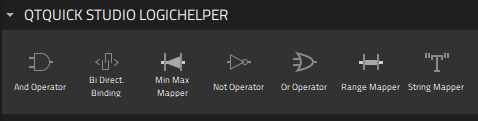
Logic helpers are available for binding property values using the boolean AND, NOT, and OR operators, as well as for mapping numbers and numerical ranges. In addition, you can synchronize the property values of two components bi-directionally.
Logic helpers are invisible components that you can use in connection with controls, such as a Slider or Check Box. To use a logic helper, drag-and-drop it from Components > Qt Quick Studio Logic Helper to Navigator. If you cannot find the logic helpers in Components, you need to add the Qt Quick Studio Logic Helper module to your project, as described in Adding and Removing Modules.
The following sections describe the different types of logic helpers in more detail.
Boolean Helpers
You can use logic helpers to bind property values using the boolean AND, OR, and NOT operators.
AND Operator
The And Operator component evaluates two boolean inputs. The output is evaluated as true if both inputs are true.
For example, we could use the checked state of two check boxes to determine the checked state of a third one. First, we drag-and-drop three instances of the Check Box components and one instance of the And Operator component to Navigator (1). Then, we select the And Operator component instance (2) and set its properties in Properties (3).
We select  next to the Input 01 field to display the Actions menu, and then Set Binding (4) to open the Binding Editor (5). There we bind the value of the
next to the Input 01 field to display the Actions menu, and then Set Binding (4) to open the Binding Editor (5). There we bind the value of the input01 property of the AND operator to the value of the checked property of the first check box. Then, we do the same in the Input 02 field, where we bind the input02 property to the checked property of the second check box.
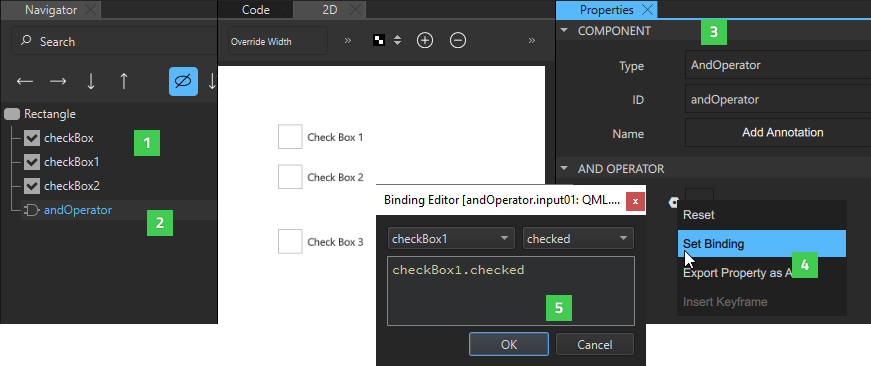
Finally, we select the third check box and bind its Checked property to the Output property of the AND operator.
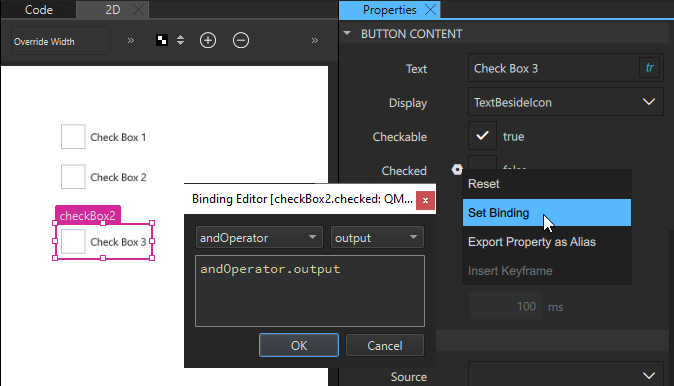
When we preview our UI, all the check boxes are initially unchecked. However, when we select the first and second check box, the third one also becomes checked.
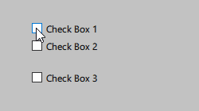
OR Operator
The Or Operator component does the same as the AND operator, but the output is true if one or both inputs are true.
NOT Operator
The Not Operator component is evaluated to true if the condition is not met.
For example, we could specify that if one check box is checked, another one cannot be checked. First, we drag-and-drop two instances of the Check Box component and one instance of the Not Operator component to Navigator. Then, we select the Not Operator component instance and set its properties in Properties. In the Binding Editor, we bind the value of the input property of the NOT operator to the value of the checked property of one check box instance.
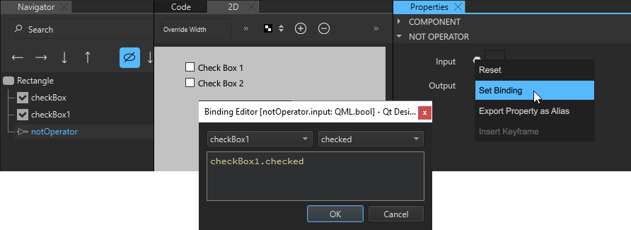
We then select the other check box instance and bind the value of its Checked field to the value of Output field of the Not Operator component.
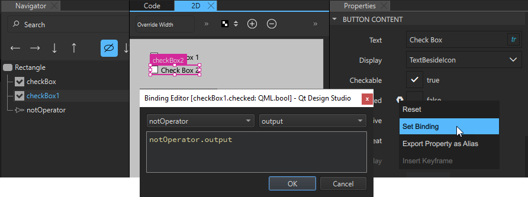
When we preview our UI, the second check box is initially checked. However, when we select the first check box, the second one is automatically cleared.
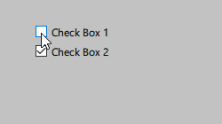
Bi-directional Binding
The Bi Direct. Binding component binds the values of two controls together, so that when one value is changed, the other one follows it. This component could be used to synchronize two sliders or a slider and checkbox. Typically, it is used to bind a backend value to a control, such as a slider.
For example, to synchronize the values of two sliders, we drag-and-drop two instances of the Slider component and one instance of the Bi Direct. Binding component to the same parent component in Navigator. Then, we select the bi-directional binding instance and set its properties in Properties.
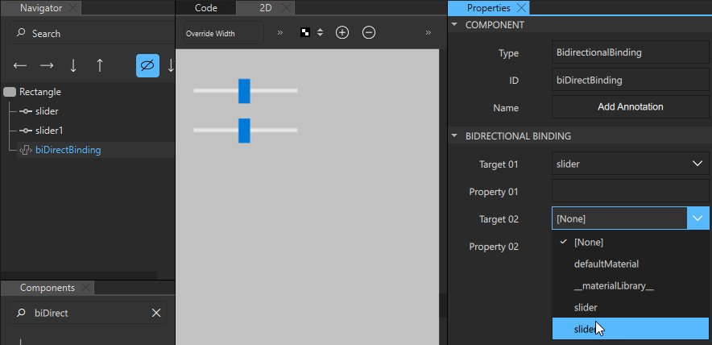
In the Target 01 and Target 02 fields, enter the IDs of the components that you want to bind together. In the Property 01 and Property 02 fields, enter the names of the properties to synchronize. In our example, we bind the value property of two slider components together, so that when we move one slider handle in the preview, the other one moves along with it.
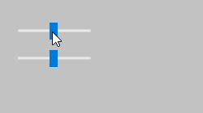
If you want to add a text field that displays the value of the slider, you can use a String Mapper component.
String Mapper
The String Mapper component maps numbers to strings. First, you add a binding between the string mapper input property and the value property of the control that you want to fetch the values from. Then, you add a binding between the text property of the string mapper and that of the component that will display the string.
For example, to use a Text component to display the value of a slider, we drag-and-drop Text, Slider, and String Mapper components to the same parent component. Then, we select the String Mapper instance in Navigator to display its properties in Properties. There we bind the value of the Input field to the value of the value property of the Slider instance.
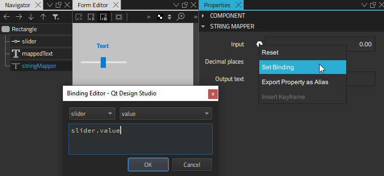
Next, we select the Text instance and bind the value of the Text field to the value of the Output text field (text property) of the String Mapper component.
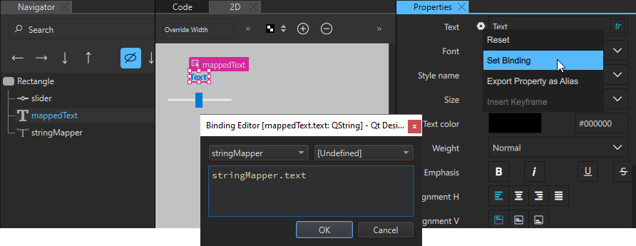
When we move the slider handle in the preview, the value displayed in the text component changes accordingly.
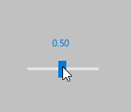
The value of the Decimal places field determines the number of digits after the decimal separator.
Minimum-Maximum Mapper
The Min Max Mapper component has output values even if the input value is out of range. This enables you to apply actions to values, such as changing a color in a state, even if they are below the minimum value or above the maximum value.
To access the values of a control, bind the Input property of the minimum-maximum mapper to that of the value property of the control.
For example, to restrict the maximum value of a slider to 0.60, regardless of the maximum value set in the slider properties, we drag-and-drop a Min Max Mapper to our example above. We select it to display its properties in Properties. Then, we bind the value of the Input property of the mapper to the value of the value property of the slider and set the value of the Max field to 0.60.
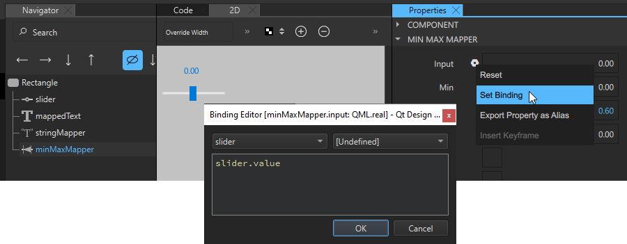
To have the maximum value displayed by the Text component, we select the String Mapper component and change the binding we set as the value of the Input field from slider.value to minMaxMapper.output.
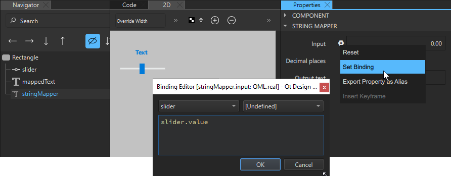
When we move the slider handle in the preview, it only moves up to the value 0.60.
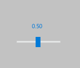
The Out of range, Above max and Below min check boxes are set to true if the value of the Input field is out of range.
For example, in the context of speed, Above max being true would mean too fast, whereas Below min being true, would mean too slow, and Out of range being true would mean either too fast or too slow.
Range Mapper
The Range Mapper component maps a numerical range to another range, so that the output value of the second range follows the input value of the original range. This is useful when remapping the current frame on the timeline, for example.
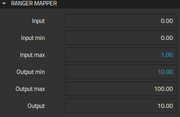
Specify the minimum and maximum input and output values in the Input min, Input max, Output min, and Output max fields and the original value in the Output field.
For example, we can specify that the values of a slider range from 0 to 1. If we want to display values from 10 to 100, instead, we can bind the values of the From and To fields of the Slider component to the values of the Input min and Input max fields of a Range Mapper component. We then set the value of the Output min field to 10 and the value of the Output max field to 100.
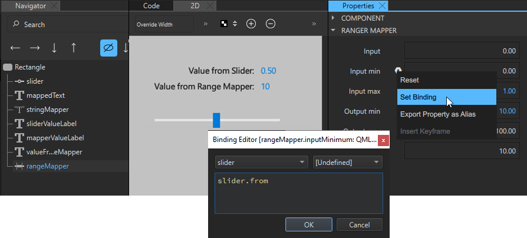
When we move the slider handle in the preview, so that the input value from the Slider component changes from 0 to 1, the output value changes from 10 to 100.
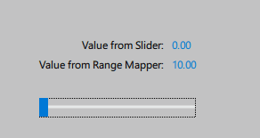
Combining Several Logic Helpers
You can combine several logic helpers of the same type or different types to define the application logic.
For example, we create a small application for selling a commodity. We use a Range Mapper component to set the price range and Min Max Mapper components to create a blockedRange where the price is either too low or too high and a badValueRange where the price is under or over the going value. We then use And Operator components to determine whether the value is below minimum or above maximum.

We use one String Mapper component to map the slider value to a Text component that displays the price, as instructed in String Mapper.
To define a price range from 0 to 1000, we bind the Input property of the Range Mapper component to the slider value and set the maximum input value for the price range in the Input max field to 1000. The minimum input value is 0 by default, so we don't need to change it.
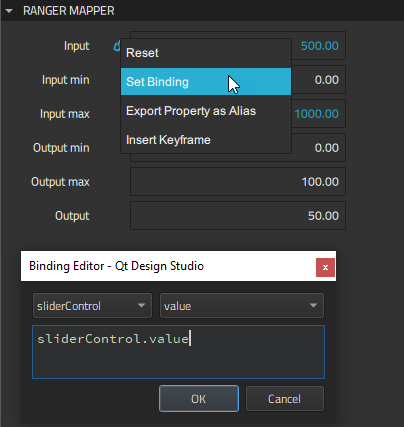
Next, we use two Min Max Mapper components to create a blocked range where the sell button will be hidden and a bad value range where selling is discouraged by changing the text and color of the sell hint.
For the blocked range, we bind the Input property of the minimum-maximum mapper to the Output value of the Range Mapper component and specify the maximum input value in the Max field.
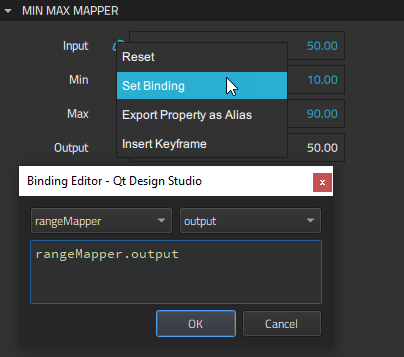
We use two And Operator components to determine that the sell button should be hidden when the value is in the blocked range. We do this by binding the value of the Input 02 field to an evaluation of the value of Out of range field of the minimum-maximum mapper. We specify that when the value is not out of range, it evaluates to true.
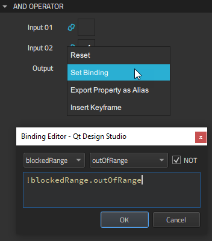
For the underValueAnd operator, we additionally bind the value of the Input 01 field to the value of the Below min field of the minimum-maximum mapper for the bad value range. For the overValueAnd operator, we bind it to the value of the Above max field of the same mapper.
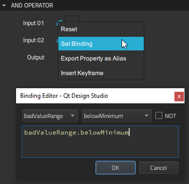
We can now evaluate values of the Min Max Mapper and And Operator components to apply different states that display different button text and sell hints. For this purpose, we create the states and set when conditions for them.
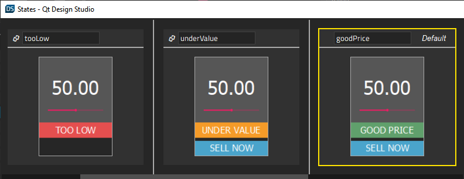
First, we create a tooLow state and set a when condition to apply it when the value of the Below min field of the Min Max Mapper component for the blocked range evaluates to true.
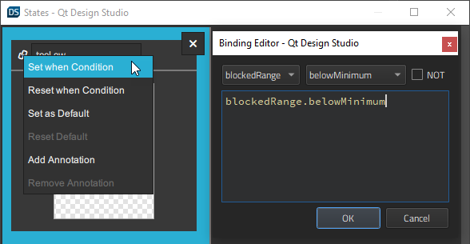
For the tooHigh state at the other end of the scale, we set the when condition to apply it when the value of the Above max field of the Min Max Mapper component for the blocked range evaluates to true.
Next, we specify that the underValue state is applied when the value of the Output field of the underValueAnd And Operator component evaluates to true.
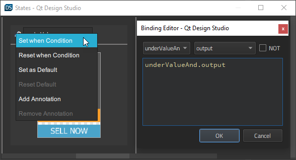
For the overValue state, we set the when condition to apply it when the value of the Output field of the overValueAnd component evaluates to true.
When we preview our application, we can see the states applied when the slider value changes.
Summary of Logic Helpers
The following table summarizes the available logic helpers.
| Icon | Logic Helper | Description |
|---|---|---|
| 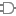 | And Operator | Boolean AND. |
| Bi Direct. Binding | A bi-directional binding that binds two values in both directions and keeps them in sync. | |
| Min Max Mapper | Maps a number to another number with a minimum and maximum value. | |
| Not Operator | Boolean NOT. | |
| 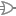 | Or Operator | Boolean OR. |
| Range Mapper | Maps a numerical range to another range, so that the output value of the second range follows the input value of the original range. | |
| 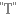 | String Mapper | Maps a number to a string with the defined precision. |